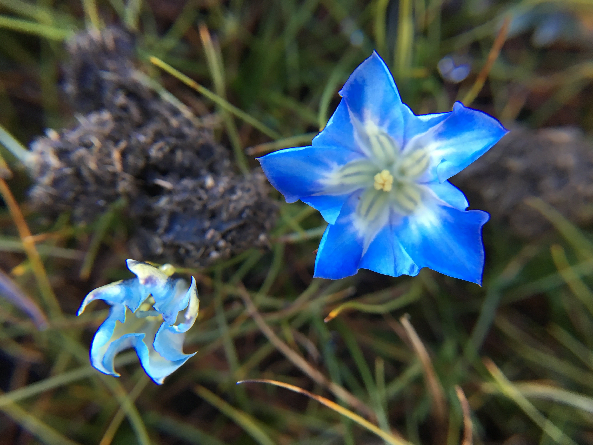

Log
Everything I make for this class, newest first. Each one is its own page.
-
Product Team Sprint: Riverton 311
· Worked with four other students to design Riverton 311, a city service app that allows residents to report broken streetlights and check their repair status. -
Design Research: Bakery Hours
· Conducted AI-stimulated interviews and observations to understand customer needs and operational constraints for extending bakery hours. -
Interaction Field Study Report at Fishbowl Computing Center
· Observed and record how students complete a printing task using the mPrint system - from entering the lab to picking up a finished print -
Past 2 weeks: Wayfinding Walk in South State Street
· A look back at what we did in the first two weeks of class, and a reflection on the wayfinding walk in South State Street. -
Building this site
· Setup, type, color, and two things that broke.
Final project
Not started yet. When it is, it will live on its own page.